SCOUT
Which Reconstruction Model Should a Robot Use?
Routing Image-to-3D Models for Cost-Aware Robotic Manipulation
Overview
TL;DR: SCOUT selects the best 3D reconstruction model for each input image, balancing quality against cost constraints like latency and memory.
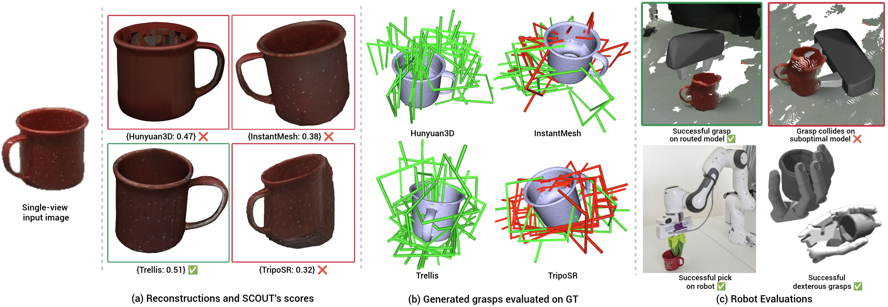
Experiments
Abstract
Robotic manipulation tasks require 3D mesh reconstructions of varying quality: dexterous manipulation demands fine-grained surface detail, while collision-free motion planning tolerates coarser representations. Multiple reconstruction methods offer different cost-quality tradeoffs, from Image-to-3D models—whose output quality depends heavily on the input viewpoint—to view-invariant methods such as structured light scanning. Querying all models is computationally prohibitive, motivating per-input model selection. We propose SCOUT, a novel routing framework that decouples reconstruction scores into two components: (1) the relative performance of viewpoint-dependent models, captured by a learned probability distribution, and (2) the overall image difficulty, captured by a scalar partition function estimate. As the learned network operates only over the viewpoint-dependent models, view-invariant pipelines can be added, removed, or reconfigured without retraining. SCOUT also supports arbitrary cost constraints at inference time, accommodating the multi-dimensional cost constraints common in robotics. We evaluate on the Google Scanned Objects, BigBIRD, and YCB datasets under multiple mesh quality metrics, demonstrating consistent improvements over routing baselines adapted from the LLM literature across various cost constraints.
Architecture
SCOUT decouples reconstruction scores into two interpretable components: the relative performance of viewpoint-dependent models (captured by a learned probability distribution) and the overall difficulty of the input image (captured by a scalar partition function estimate). This decoupling stabilizes training and provides a key scalability advantage: the learned network predicts only over the viewpoint-dependent models, so its size and training procedure are entirely independent of the view-invariant methods.
Results
Click a thumbnail below to view interactive 3D reconstructions from each candidate model alongside the ground truth.
Hunyuan3D
InstantMesh
TRELLIS
TripoSR
Ground Truth
Select an input image
Evaluations
We evaluate SCOUT on the Google Scanned Objects (GSO) and YCB+BigBIRD datasets across multiple mesh quality metrics, lighting conditions, and viewpoints.
Lighting conditions include:
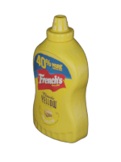
Flash Lighting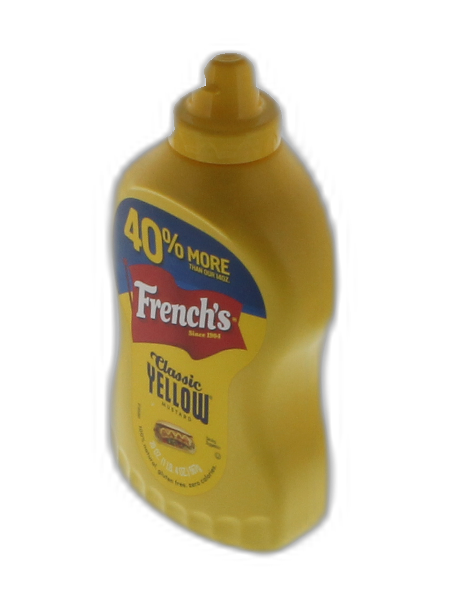
Realistic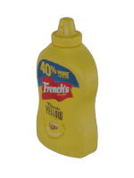
Surround LightingViewpoints include (in addition to many others):
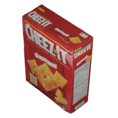
Corner (non-degenerate)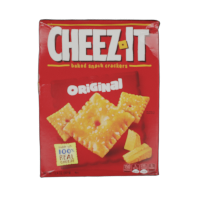
Frontal (degenerate)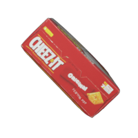
Top-down (degenerate)Enabling Downstream Robotic Tasks
SCOUT's per-input model selection translates to measurable gains in downstream robotic tasks. We validate through grasp proposal evaluation, dexterous manipulation in simulation, and real-world pick-and-place on a Franka Panda robot.
Grasp Collisions
Grasps generated on each reconstruction are evaluated on the ground-truth mesh. Green grasps are collision-free; red grasps collide with the object.
Hunyuan3D
InstantMesh
TRELLIS
TripoSR
Select an input image
Dexterous Grasps
Each image shows a dexterous grasp executed on the reconstructed mesh. The overlay indicates whether the grasp succeeds when evaluated on the ground-truth mesh.
Hunyuan3D
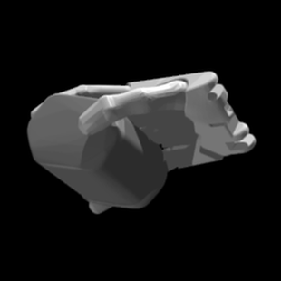
InstantMesh
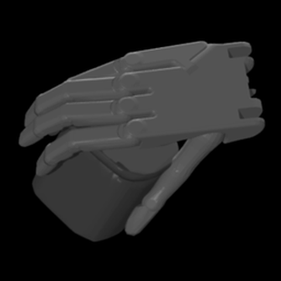
TRELLIS
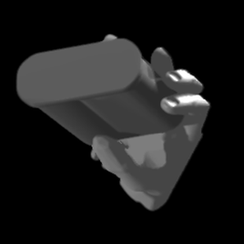
TripoSR
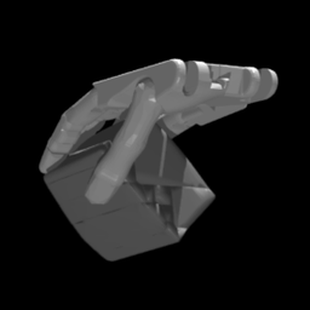
Ground Truth
Select an input image
Citation
@inproceedings{scout2026,
title={Which Reconstruction Model Should a Robot Use? Routing Image-to-3D Models for Cost-Aware Robotic Manipulation},
author={TODO},
booktitle={TODO},
year={2026}
}